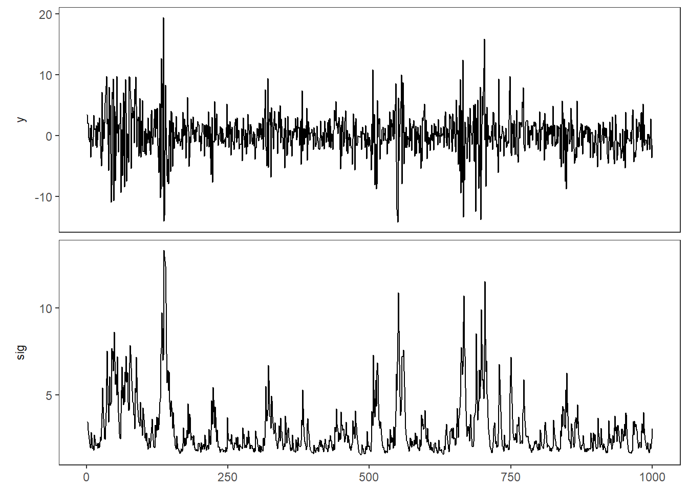
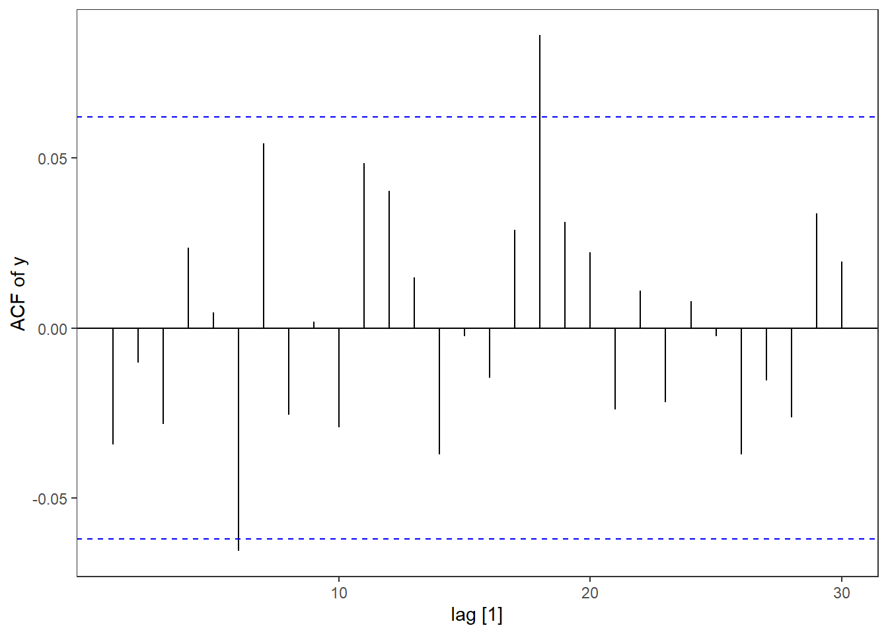
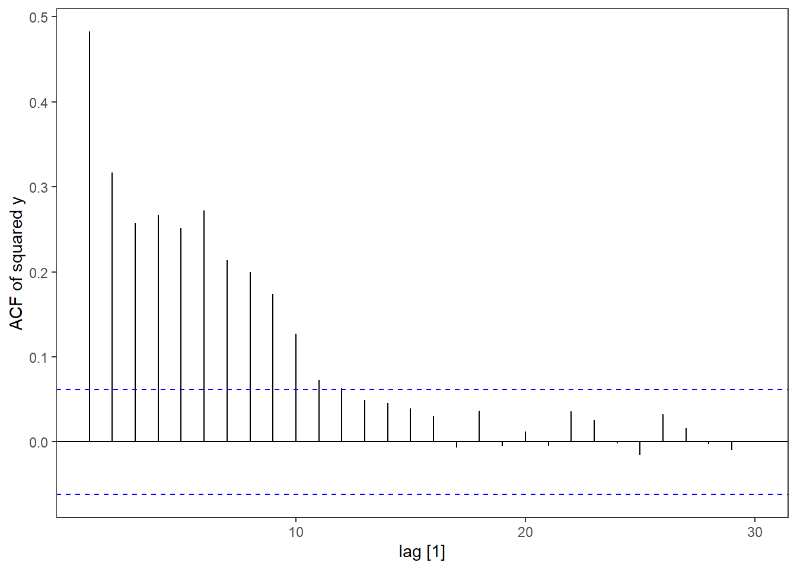
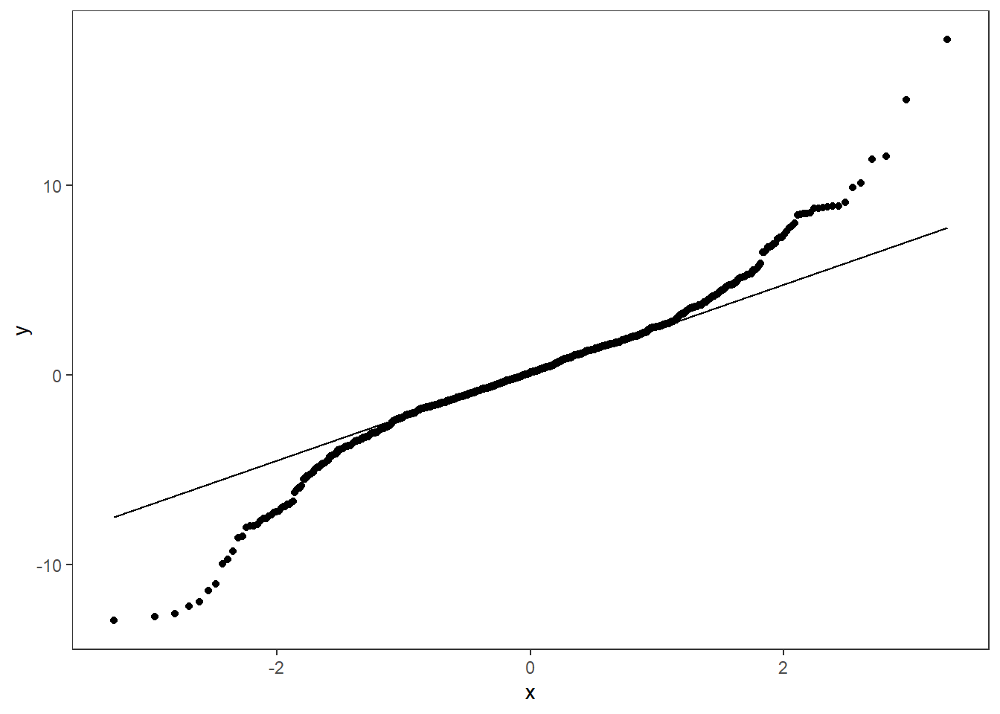
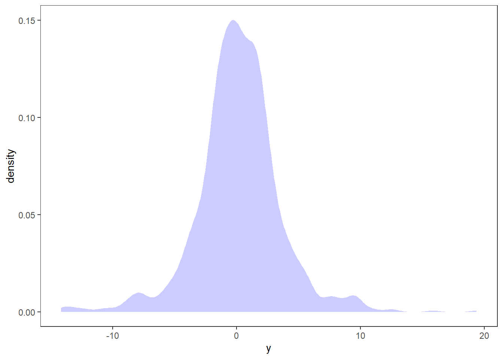

Warning: package 'ggplot2' was built under R version 4.3.2GARCH models
The ARCH model introduced by Engle (1982) was later extended to a generalized ARCH (GARCH) by Bollerslev (1986). The generalization is kind of equivalent to going from an AR model to an ARMA model (d=0). Similar to a ARCH, we can define a GARCH(r,s) as: \begin{equation*} \begin{split} y_t &= \sigma_t\,\varepsilon_t,\\ \sigma_t^2 &=\omega +\alpha_1y_{t-1}^2+\cdots+\alpha_ry_{t-r}^2 + \beta_1\sigma_{t-1}^2+\cdots+\beta_s\sigma_{t-s}^2, \end{split} \end{equation*} or \begin{equation*} \begin{split} y_t &= \sigma_t\,\varepsilon_t,\\ \sigma_t^2 &=\omega +\sum_{i=1}^r\alpha_iy_{t-i}^2+\sum_{j=1}^s \beta_j\sigma_{t-j}^2. \end{split} \end{equation*} Here \omega>0, \alpha_i\ge0 for i=1,\ldots, r and \beta_j\ge 0 for j=1,\ldots, s. We need however that \alpha_r,\beta_s>0, otherwise the model order can be reduced to e.g. (r-1, s-1) if both are zero. Same as for the ARCH model, \varepsilon_t\sim \text{iid WN}(0,1). Note that if \beta_1=\beta_2=\cdots=\beta_s=0, the model reduces to a ARCH(r) model, i.e. a GARCH(r,0)=ARCH(r) and ARCH is a special case of GARCH.
Another special case, which is also maybe the most common GARCH model is the GARCH(1,1): \begin{equation*} \begin{split} y_t &= \sigma_t\,\varepsilon_t,\\ \sigma_t^2 &=\omega +\alpha_1y_{t-1}^2+ \beta_1\sigma_{t-1}^2. \end{split} \end{equation*} We focus on this special case when considering some characteristics of the model.
Moments and stationarity condition
Expectation is still the same as for the ARCH models: \mathbb E\,y_t = \mathbb E\,\sigma_t\mathbb E\,\varepsilon_t = 0. The variance calculation is a bit different now that we have the GARCH component. Assuming stationarity, we have that \sigma^2 = \mathrm{Var}(y_t) =\mathbb E\,y_t^2<\infty. Thus \sigma^2= \mathbb E\sigma_t^2 \mathbb E\,\varepsilon_t^2 =\mathbb E\sigma_t^2=\omega+\alpha_1\mathbb E\,y_{t-1}^2+\beta_1 \mathbb E\,\sigma_{t-1}^2 Since y_t is stationary and the variance does not depend on t, we get that \mathbb E\,y_{t-1}^2 =\mathbb E\,\sigma_{t-1}^2 = \sigma^2, and thus \sigma^2 =\omega+\alpha_1 \sigma^2+\beta_1\sigma^2\quad \Leftrightarrow \quad \sigma^2 =\frac{\omega}{1-\alpha_1-\beta_1}. Clearly, we need that \alpha_1+\beta_1<1. This is in fact a necessary and sufficient condition for stationarity of a GARCH process.
GARCH vs ARMA
As we have seen, for an ARCH(r) model there is an AR(r) representation. Similarly, where is an ARMA(r,s) representation for a GARCH(r,s) model. Using the same approach as for the ARCH case (with r=s=1), we have that y_t^2= \sigma_t^2 +v_t,\quad v_t = \sigma_t^2(\varepsilon_t^2-1). Note that this also means that \sigma_t^2 = y_t^2 -v_t. Inserting the definition of \sigma_t^2 according to a GARCH(1,1) we get that y_t^2 = \omega+\alpha_1y_{t-1}^2 +\beta_1\underbrace{\sigma_{t-1}^2}_{y_{t-1}^2-v_{t-1}} +v_t = \omega+(\alpha_1+\beta_1)y_{t-1}^2-\beta_1v_{t-1}+ v_t. We can write this as (1-(\alpha_1+\beta_1)\,B)\,y_t^2 = \omega+(1-\beta_1\,B)v_t, which we can recognize as an ARMA(1,1) with intercept c=\omega, \phi_1 = \alpha_1+\beta_1, \theta_1 = -\beta_1 and v_t is the white noise process (assuming \mathbb E\,y_t^4<\infty).
GARCH simulation
Let us simulate an GARCH(1,1) model by basic R code, assuming Gaussian innovations.
library(fpp3)
library(tidyverse)
# Setting seed for reproduciblity
set.seed(12345)
nT = 1000
omg = 1.2
a1 = 0.4
b1 = 0.5
# Initiating y and sigma
y <- sig <- rep(sqrt(omg/(1-a1-b1)),
nT)
# Simulation:
for(t in 2:nT){
sig[t] <- sqrt(omg+a1*y[t-1]^2+b1*sig[t-1]^2)
y[t] <- sig[t]*rnorm(1)
}
# tsibble object:
garch <- tsibble(
t = 1:nT,
y = y,
sig = sig,
index = t
)
# Plotting:
garch %>% pivot_longer(-t) %>%
mutate(name = factor(name, levels = c("y","sig"))) %>%
ggplot(aes(x=t,y=value)) +
geom_line()+
facet_wrap(~name, scales = "free_y", nrow=2,
strip.position = "left")+
theme(axis.title =element_blank())
We see similarities with the ARCH model. Perhaps there is a tendency for the clusters to be a bit more persistent.
Let’s look at the autocorrelation of the simulated time series and its squared values. We also do a qq-plot and a distribution plot.
garch %>% ACF(y) %>% autoplot() + labs(y = "ACF of y")
garch %>% ACF(y^2) %>% autoplot() + labs(y = "ACF of squared y")
garch %>% ggplot(aes(sample = y)) + geom_qq() +geom_qq_line()
garch %>% ggplot(aes(x = y)) + stat_density(fill = "blue", alpha = .2)



The tendency is similar to the ARCH model. There is little autocorrelation and heavy tails in the values, but profound autocorrelation for the squared values.
In this course we will assume normality of the residuals for simplicity, but you can also use other distributions as long as they are standardized to have zero expectation and unit variance. We will come back to this when looking at the implementation.
References
- Bollerslev, T. (1986). Generalized autoregressive conditional heteroskedasticity. Journal of econometrics, 31(3), 307-327.
- Engle, R. F. (1982). Autoregressive conditional heteroscedasticity with estimates of the variance of United Kingdom inflation. Econometrica: Journal of the econometric society, 987-1007.